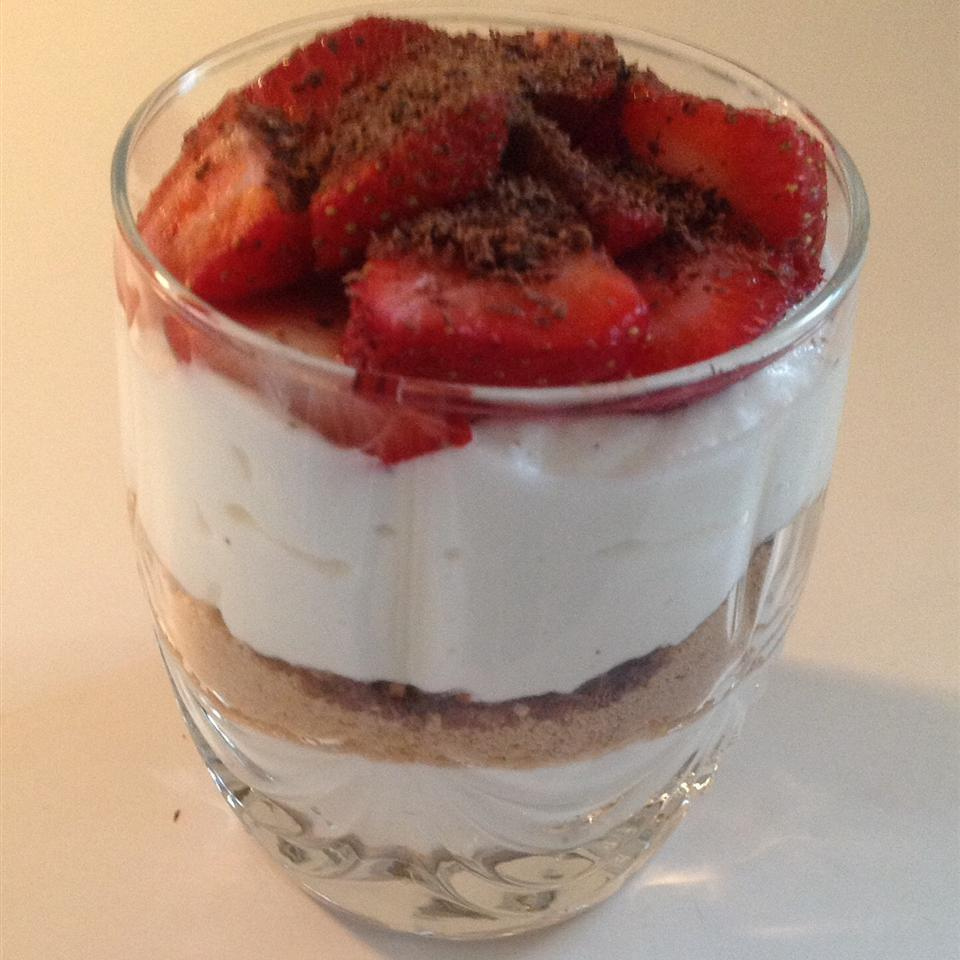

Chicken Marsala

An elegant cannoli dessert! Perfect for a romantic evening!
Ingredients:
- 1 cup part-skim ricotta cheese
- ¼ cup confectioners' sugar
- ½ teaspoon vanilla extract
- ½ teaspoon almond extract
- ½ cup graham cracker crumbs
- 2 tablespoons butter, melted
- ¼ cup canned peach slices, drained and chopped
- 2 tablespoons grated semi-sweet chocolate
Steps:
- Stir together ricotta cheese, confectioners' sugar, and vanilla and almond extracts in a bowl until smooth.
- Mix graham cracker crumbs and melted butter together in a separate bowl.
- Spoon about 1/4 of the graham cracker mixture into 2 wine glasses.
- Layer about 1/4 the cheese mixture on top, then repeat the layers with the remaining cracker crumbs and ricotta cheese.
- Top with chopped peaches and grated chocolate. Chill until ready to serve.